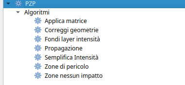
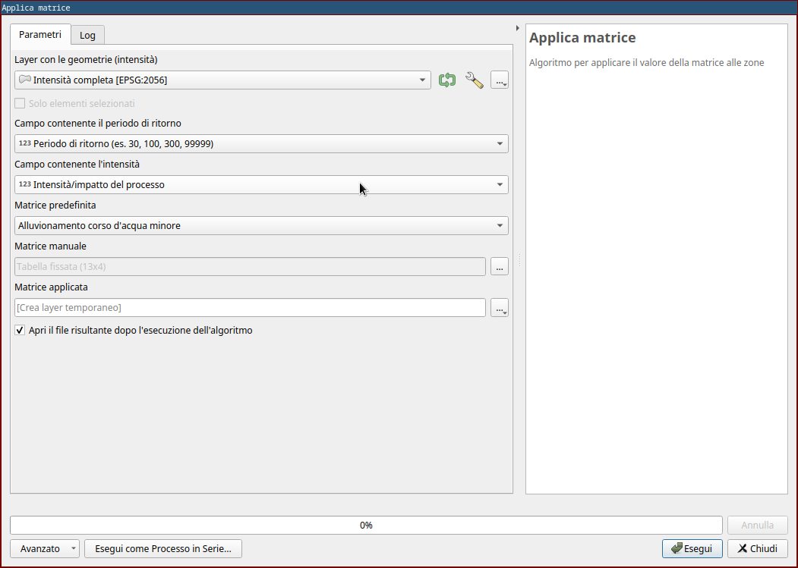
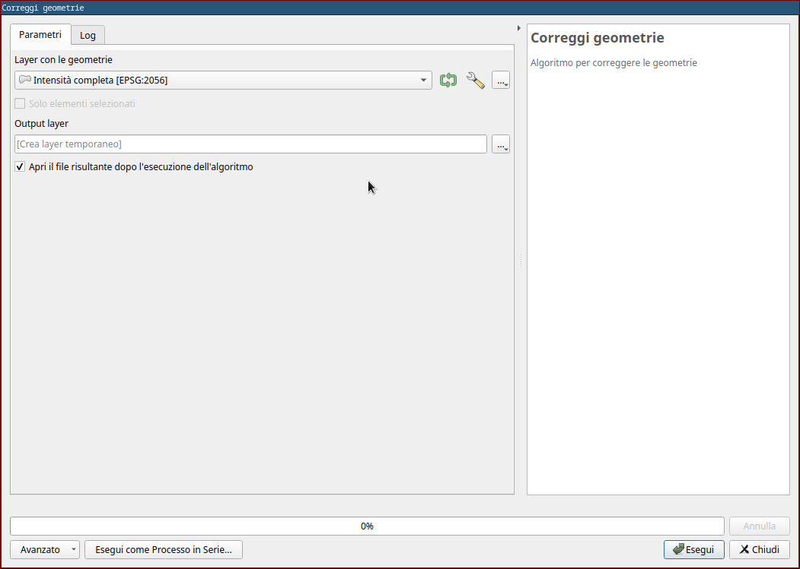
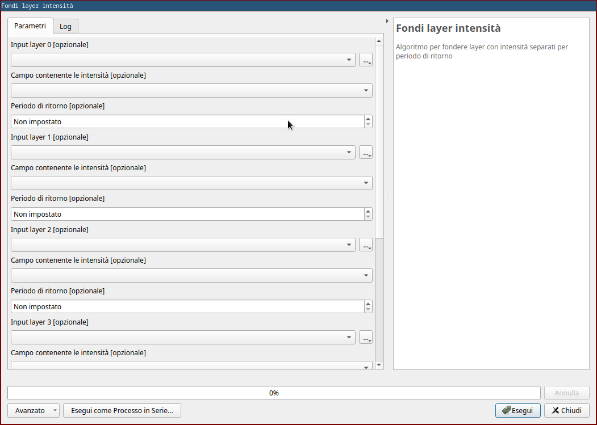
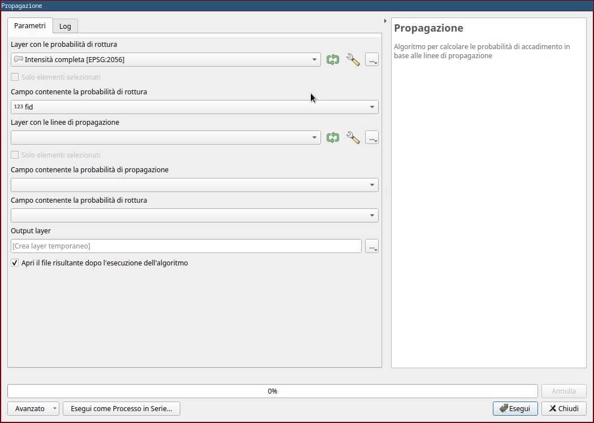
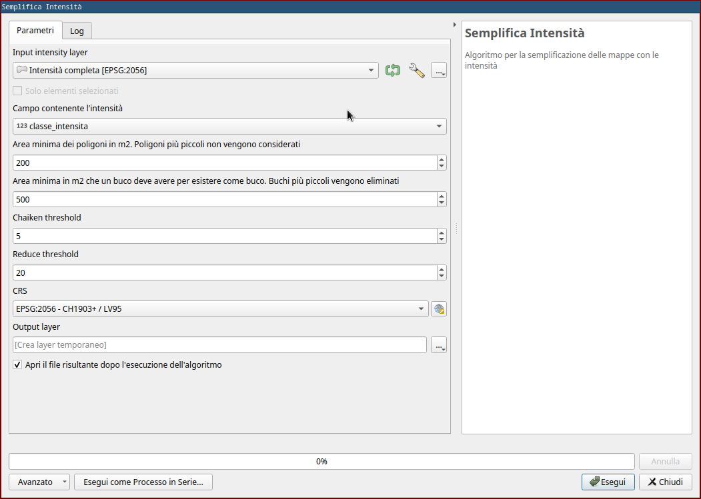
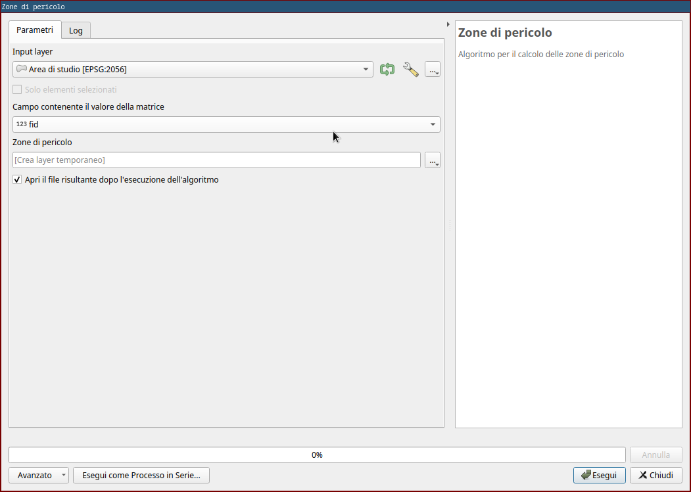
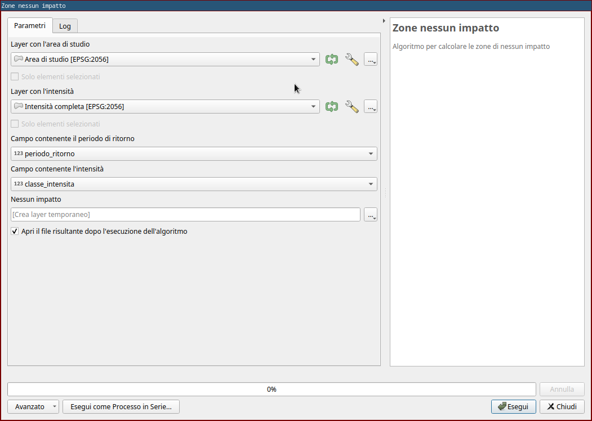

Algoritmi
Gli algoritmi utilizzati dal plugin sono anche disponibili in QGIS come "Algoritmi di Processing" utilizzabili singolarmente.
Gli algoritmi sono parte del plugin pzp_utils che é una dipendenza del plugin pzp e se necessario può anche essere installato individualmente.

Applica matrice

Scopo
Questo algoritmo aggiunge un campo con il valore della matrice a ogni geometria del layer con le intensità
Parametri input
- Layer con le geometrie (intensità)
- Campo contenente il periodo di ritorno
- Campo contenente l'intensità
- Matrice da utilizzare (predefinita o manuale)
Output
Viene generato un layer uguale al layer in ingresso con l'aggiunta di un campo contenente il valore della matrice per ogni geometria.
Correggi geometrie

Scopo
Questo algoritmo cerca di correggere gli errori più frequenti di digitalizzazione delle geometrie.
Parametri input
- Layer con le geometrie
Ouptut
Viene generato un layer con le geometrie corrette mantenendo gli attributi delle geometrie iniziali.
Vengono eseguite in particolare le seguenti operazioni:
- Aggancia punti al reticolo (con reticolo di 1mm)
- Creazione e rimozione di un buffer negativo molto piccolo (1e-06 m) per rimuovere "sbavature" delle geometrie
- Rimozione delle aree con superficie inferiore a 1m2
- Rimozione dei buchi con superficie maggiore a 1m2
Fondi layer intensità

Scopo
Questo algoritmo permette di fondere nello stesso layer fino a 5 layer singoli. In alcuni casi si hanno a disposizione layer separati per ogni periodo di ritorno, questo plugin permette di definire per ogni layer il periodo di ritorno considerato e fondere tutti i layer in un unico layer.
Parametri input
Fino a 5x:
- Layer con le intensità
- Campo contenente le intensità
- Periodo di ritorno a cui si riferisce il layer
Output
Viene generato un layer con tutte le geometrie dei layer in ingresso con l'aggiunta di un attributo per il periodo di ritorno.
Propagazione

Scopo
Questo algoritmo permette di calcolare le probabilità di accadimento (cioè le intensità per periodo di ritorno) in base alle linee di propagazione.
Parametri input
- Layer con le probabilità di rottura
- Campo con la probabilità di rottura
- Layer con le linee di propagazione
- Campo con la probabilità di propagazione
- Campo con la probabilità di rottura
Output
Viene generato un layer che contiene le intensità. Per ogni fonte di processo e per ogni periodo di ritorno, vengono tagliate i poligoni del layer con le probabilità di rottura secondo le linee di propagazione corrispondenti definite nel layer delle probabilità di propagazione.
Semplifica intensità

Scopo
Questo algoritmo permette di semplificare le geometrie di un layer con le intensità. È di particolare utilità in caso in cui le intensità siano generata tramite tool di simulazione che generano geometrie molto frastagliate.
Parametri input
- Layer con le intensità
- Campo contenente le intensità
- Area minima in m2 dei poligoni da considerare
- Area massima in m2 per l'eliminazione dei buchi. Buchi più piccoli di così vengono eliminati.
- Parametro "Chaiken threshold" dell'algoritmo generalize di GRASS utilizzato
- Parametro "Reduce threshold" dell'algoritmo generalize di GRASS utilizzato
- CRS
Output
Viene generato un layer con le geometrie semplificate
Nota
È necessario avere GRASS installato per poter utilizzare questo algoritmo
Zone di pericolo

Scopo
Questo algoritmo permette la generazione delle zone di pericolo
Parametri input
- Layer con le intensità
- Campo contenente il valore della matrice
- Campo contenente la fonte del processo
Output
Viene generato un layer contenente le zone di pericolo. Per ogni fonte di processo vengono tagliati tutti i poligoni in corrispondenza di tutte le intersezioni, vengono mantenuti i poligoni duplicati con valore maggiore e vengono fuse superfici con lo stesso valore.
Zone nessun impatto

Scopo
Questo algoritmo permette la generazione delle zone di nessun impatto
Parametri input
- Layer con le aree di studio
- Campo contenente la fonte del processo
- Layer con le intensità
- Campo contenente il periodo di ritorno
- Campo contenente l'intensità
- Campo contenente la fonte del processo
Output
Viene generato un layer contenete le zone di nessun impatto per ogni area di studio. In pratica, per ogni area di studio, viene creata una geometria con intensità "nessun impatto" corrispondente a tutta la superficie dell'area di studio non coperta da altre geometrie della fonte di proceso in questione.
Rimuovi sovrapposizioni
Scopo
Questo algoritmo permette di rimuovere le sovrapposizioni nei layer delle intensità.
Parametri input
- Layer con le intensità
- Campo contenente l'intensità
- Campo contenente il periodo di ritorno
- Campo contenente la fonte del processo
Output
Viene generato un layer dove sono state rimosse le sovrapposizioni tenendo in considerazione lo stesso periodo di ritorno e la stessa fonte di processo.
Fondi per area
Scopo
Questo algoritmo permette di rimuovere le piccole aree fondendole con le geometrie confinanti
Parametri input
- Layer con le geometrie
- Modalità di fusione
Output
Viene generato un layer dove le geometrie con area inferiore a 1m2 sono state fuse con le geometrie adiacenti